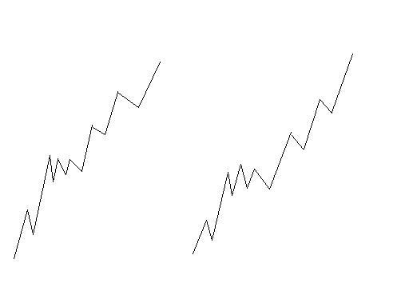

在等待利空落地的日子里
2007/7/19 15:29:28
其实，无论本ID出差还是在北京，和各位的距离都是相等的，也就是一层网络而已。所以，虽然每次本ID出差，大盘就有病一般，但本ID利用战事的空闲处，也要干点别的事情，二级市场的事情，不是光二级市场决定的，所谓工夫在诗外矣。
现在科技那么发达，在哪里看盘都一样，别说深圳了。本ID在N多年前，就熟悉深圳的大小证券部，里面留下无数故事，有时候只能说给星星听了。在这样一个等待利空落地的日子里，说点闲话也不是多余的。
但，就算在这样一个日子里，汉奸鬼子还没罢休。看看尾盘最后十来分钟的窄幅波动，斗争一直到最后1秒。有时候，真觉得这种事情有点无聊，至于吗，汉奸鬼子们？最后几分钟不晃悠一下，你们会死呀？当然，这也是可以理解的，换着本ID当空头，只会更残忍。
现在，其实没什么可说的，在等待利空落地的日子里，大家就去倾听那落花飘落的声音，本ID有足够的耐心，等待那些火星人都知道的利空影子一样摔碎。所有爱当捕风蚊子、捉影苍蝇的，就继续吧！
虽然，写相信未来的人，最后成了疯子，但并不需要疯子才可以相信未来。特别对中国资本市场的未来，可以断言的是，所有用最疯狂的愚昧去断送中国资本市场前途的人，无论是谁，都只能是民族和历史的罪人。
在外，课程没法写了，但还是可以继续考考各位的学习程度的，今天又来一道题目，下面，每一划依然代表实际的笔，请问，站在线段的角度，这两者是否相同？为什么？
各位就请好好回答问题，回答不出的，就请继续学习。本ID要忙去了，先下，再见。
